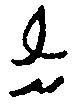
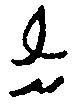
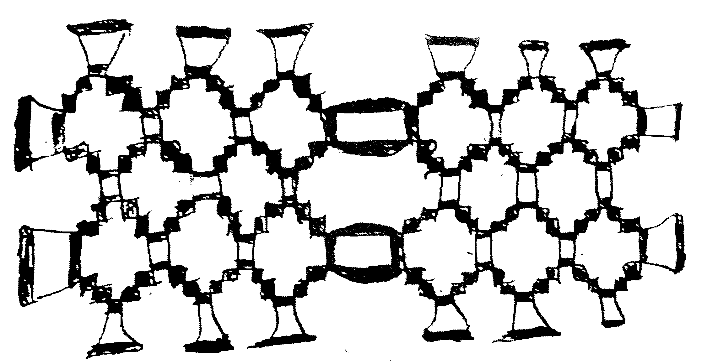
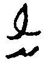

⊛ تامَسْ عُوءِنْ5{{ }}4 ⊛ ماسَه عُوءِنْ ⊛ }}5
|4| 7{{ شفَاي عُوءِنْ 8{{ }}7 ⊛ ذُون عُوءِنْ 9{{ ⊛ }}8 ماکِتْ عُوءِنْ ⊛ }}9
|5| 10{{ لَيسَهْ عُوءِنْ ⊛ ⊛ ⊛ ⊛ }}10
⊛ تامَسْ عُوءِنْ5{{ }}4 ⊛ ماسَه عُوءِنْ ⊛ }}5
|4| 7{{ شفَاي عُوءِنْ 8{{ }}7 ⊛ ذُون عُوءِنْ 9{{ ⊛ }}8 ماکِتْ عُوءِنْ ⊛ }}9
|5| 10{{ لَيسَهْ عُوءِنْ ⊛ ⊛ ⊛ ⊛ }}10
[جـ 1 صـ 1و]
|1| ⊛ ((1))
|2| سیدي يسمى 2{{ ذیم عُوءِنْ }}2
|3| 3{{ بِتسِه عُوءِنْ 4{{ }}3 ⊛ تامَسْ عُوءِنْ5{{ }}4 ⊛ ماسَه عُوءِنْ ⊛ }}5
|4| 7{{ شفَاي عُوءِنْ 8{{ }}7 ⊛ ذُون عُوءِنْ 9{{ ⊛ }}8 ماکِتْ عُوءِنْ ⊛ }}9
|5| 10{{ لَيسَهْ عُوءِنْ ⊛ ⊛ ⊛ ⊛ }}10
((1)) : comment: This figure is significantly damaged, and it is replaced by an equivalent;
2{{ ... }}2 : comment: Jim Owen;
3{{ ... }}3 : comment: Betsy Owen;
4{{ ... }}4 : comment: Thomas Owen;
5{{ ... }}5 : comment: Martha Owen;
7{{ ... }}7 : comment: Sophia Owen;
8{{ ... }}8 : comment: John Owen;
9{{ ... }}9 : comment: Margaret Owen;
10{{ ... }}10 : comment: Eliza Owen;